BEKNOPTE VERKLARING
van de
MECHELSE CATECHISMUS
ten gebruike van het middelbaar onderwijs
VIERDE DEEL
–
ZES EN DERTIGSTE LES
Van het Huwelijk
| Natuur | Wat is het Huwelijk? | |||
| Wat is de ondertrouw, die gewoonlijk voorgaat? | ||||
| Natuur van dit Sacrament nader bepaald | Personen, die het Huwelijk mogen aangan, en met wie het mag aangegaan worden | Mag het Huwelijk van iedereen ontvangen worden en met alle mensen? | ||
| Zou het Huwelijk, met deze aangegaan, immer goed wezen? | ||||
| Wat is geestelijk maagschap? | ||||
| Voorwaarde om het te ontvangen | Moet het huwelijk vóór iemand geschieden? | |||
| Uitwerksel | Wat geeft het heilig Sacrament van het Huwelijk? | |||
| Kan het Huwelijk niet ontbonden worden? | ||||
| Gesloten tijd | Waarom laat de H. Kerk de Huwelijken niet toe in de Advent en de Vasten? | |||
Wat is het Huwelijk?
Een Sacrament, door hetwelk man en vrouw wettelijk verbonden worden, en genade ontvangen om kinderen tot Gods glorie op te brengen
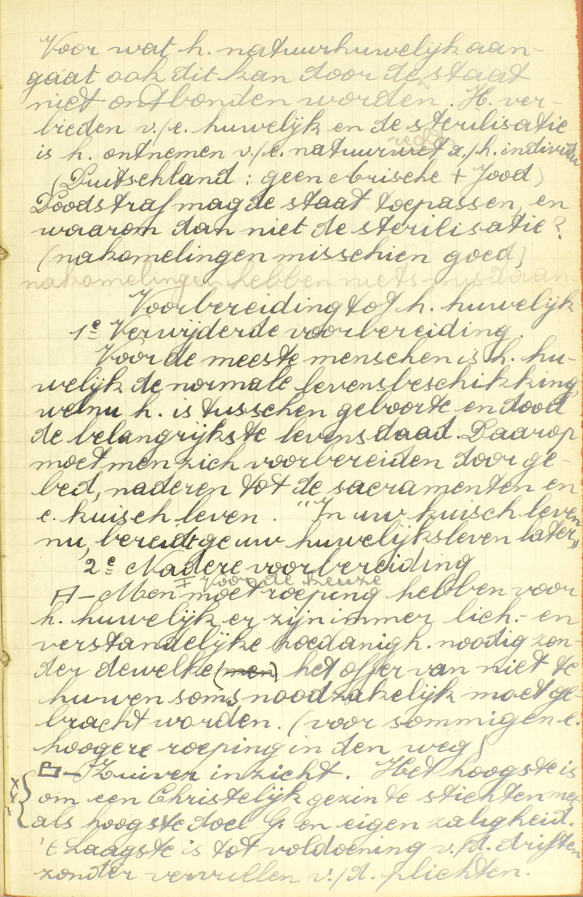
Voor wat het natuurhuwelijk aangaat, ook dit kan door de
staat niet ontbonden worden. Het verbieden van een huwelijk
en de sterilisatie is het ontnemen van een natuurrecht aan
het individu. (Duitsland: geen Arische + Jood) Doodstraf mag
de staat toepassen, en waarom dan niet sterilisatie?
(nakomelingen misschien goed) Nakomelingen hebben niets
misdaan.
Voorbereiding tot het huwelijk
1ᵉ
Verwijderde voorbereiding. Voor de meeste mensen is het
huwelijk de normale levensbeschikking, welnu het is tussen
geboorte en dood de belangrijkste levensdaad. Daarop moet
men zich voorbereiden door gebed, naderen tot de sacramenten
en een kuis leven. “In uw kuis leven nu, bereidt ge uw
huwelijksleven later”. 2ᵉ Nadere voorbereiding. A - Men moet
roeping hebben voor het huwelijk, er zijn immers
lichamelijke en verstandelijke hoedanigheden nodig zonder
dewelke het offer van niet te huwen soms noodzakelijk moet
gebracht worden (voor sommigen een hogere roeping in de
weg). B - Zuiver inzicht. Het hoogste is om een Christelijk
gezin te stichten met als hoogste doel God en eigen
zaligheid. ‘t Laagste is tot voldoening van de driften,
zonder vervullen van de plichten.
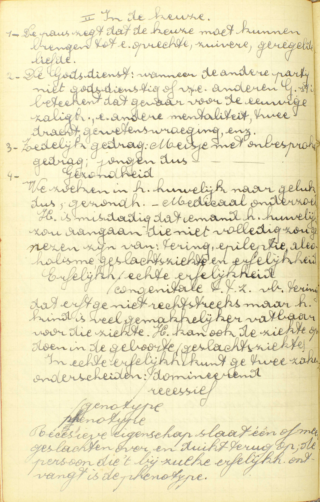 In de
keuze
1 - De paus zegt dat de keuze moet kunnen
brengen tot een oprechte, zuivere, geregelde liefde. 2 - De
Godsdienst: wanneer de andere partij niet godsdienstig of
van een andere Godsdienst is, betekent dat gevaar voor de
eeuwige zaligheid, een andere mentaliteit, tweedracht,
gewetenswroeging, enz. 3 - Zedelijk gedrag: meisje met
onbesproken gedrag; jongen dus met onbesproken gedrag. 4 -
Gezondheid. We zoeken in het huwelijk naar geluk, dus
gezondheid, medisch onderzoek. Het is misdadig dat iemand
het huwelijk zou aangaan die niet volledig zou genezen zijn
van: tering, epilepsie, alcoholisme, geslachtsziekte en
erfelijkheid. Erfelijkheid: echte erfelijkheid /
congenitale, t.t.z. b.v. tering; dat erft ge niet
rechtstreeks, maar het kind is veel gemakkelijker vatbaar
voor die ziekte. Het kan ook de ziekte opdoen in de geboorte
(geslachtsziekte). In echte erfelijkheid kunt ge twee zaken
onderscheiden: dominerend / recessief (genotype /
phenotype). Recessieve eigenschap slaat één of meer
geslachten over en duikt terug op; de persoon die ’t bij
zulke erfelijkheid ontvangt is de phenotype.
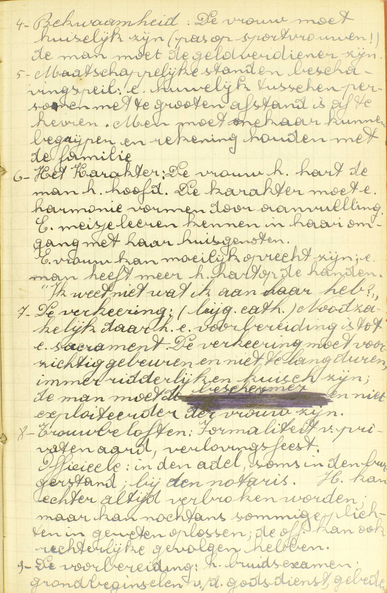 4 - Bekwaamheid: de
vrouw moet kuiselijk zijn (pas op met sportvrouwen!); de man
moet de geldverdiener zijn. 5 - Maatschappelijke standen en
beschavingspeil: een huwelijk tussen personen met te grote
afstand is af te keuren. Men moet mekaar kunnen begrijpen en
rekening houden met de familie. 6 - Het karakter: de vrouw
het hart, de man het hoofd. Het karakter moet een harmonie
vormen door aanvulling. Een meisje leren kennen in haar
omgang met haar huisgenoten. Een vrouw kan moeilijk oprecht
zijn; een man heeft meer het hart op de handen. “Ik weet
niet wat ik aan haar heb?” 7 - De verkering: noodzakelijk
daar het een voorbereiding is tot een sacrament. De
verkering moet voorzichtig gebeuren en niet te lang duren,
immer ridderlijk en kuis zijn; de man moet de beschermer en
niet de exploiteerder van de vrouw zijn. 8 - Trouwbeloften:
formaliteit van private aard, verlovingsfeest. Officieel: in
de adel, soms in de burgerstand, bij de notaris. Het kan
echter altijd verbroken worden, maar kan nochtans sommige
plichten in geweten oplossen, de officiële [trouwbelofte]
kan ook rechterlijke gevolgen hebben.
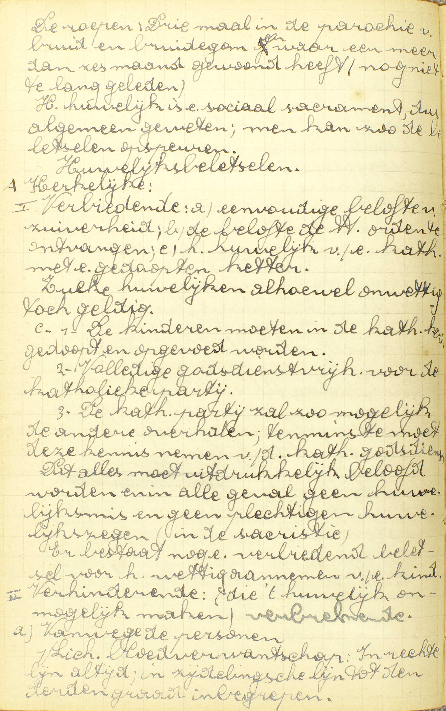 9 - De voorbereiding:
het bruidsexamen: grondbeginselen van de godsdienst,
gebeden. De roepen: drie maal in de parochie van bruid en
bruidegom en waar een meer dan zes maand gewoond heeft (nog
niet te lang geleden). Het huwelijk is een sociaal
sacrament, dus algemeen geweten; men kan zo de beletselen
opspeuren.
Huwelijksbeletselen
A -
Kerkelijk. I - Verbiedende: a) eenvoudige belofte van
zuiverheid; b) de belofte de Heilige orden te ontvangen; c)
het huwelijk van een katholiek met een gedoopte ketter.
Zulke huwelijken alhoewel onwettig, toch geldig. 1 - De
kinderen moeten in de katholieke kerk gedoopt en opgevoed
worden. 2 - Volledige godsdienstvrijheid voor de katholieke
partij. 3 - De katholieke partij zal zo mogelijk de andere
overhalen; tenminste moet deze kennis nemen van de
katholieke godsdienst. Dit alle moet uitdrukkelijk beloofd
worden en in alle geval geen huwelijksmis en geen plechtige
huwelijkszegen (in de sacristie). Er bestaat nog een
verbiedend beletsel voor het wettig aannemen van een kind.
II - Verhinderende: (die ’t huwelijk onmogelijk maken): a)
vanwege de personen: 1 - Lichamelijke bloedverwantschap: in
recht lijn altijd; in zijdelingse lijn tot de derde graad
inbegrepen. 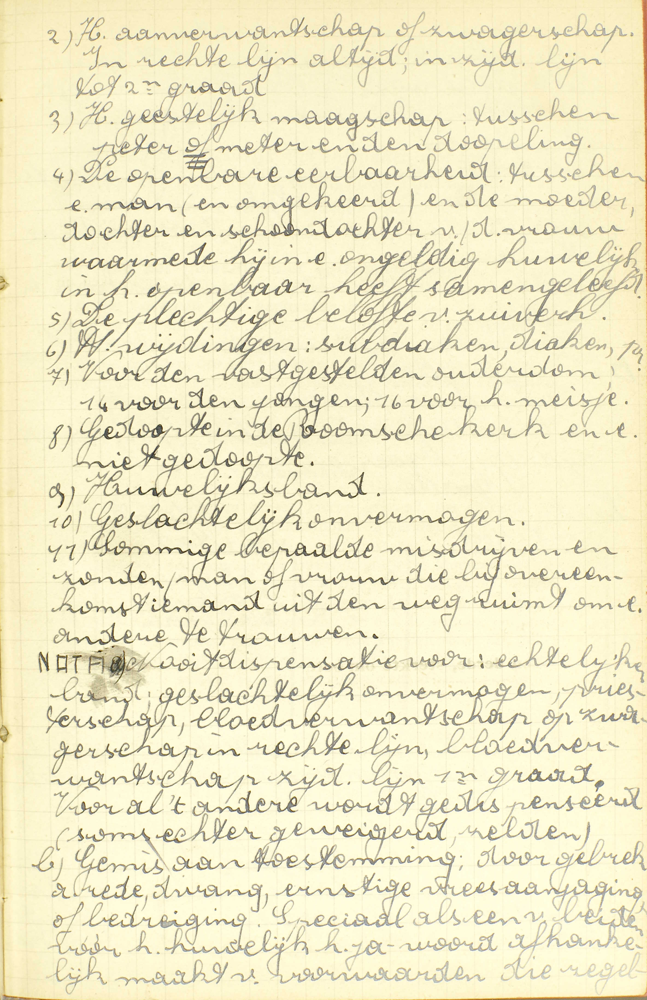 2 - Het
aanverwantschap of zwagerschap. In rechte lijn altijd; in
zijdelingse lijn tot de tweede graad. 3 - Het geestelijk
maagschap: tussen peter of meter en de dopeling. 4 - De
openbare eerbaarheid: tussen een man (en omgekeerd) en de
moeder, dochter en schoondochter van de vrouw waarmee hij in
een ongeldig huwelijk in het openbaar heeft samengeleefd. 5
- De plechtige belofte van zuiverheid. 6 - Heilige
wijdingen: subdiaken, diaken, enz. 7 - Voor de vastgestelde
ouderdom: 14 voor de jongen, 16 voor het meisje. 8 -
Gedoopte in de Roomse Kerk en een niet gedoopte. 9 -
Huwelijksband. 10 - Geslachtelijk onvermogen. 11 - Sommige
bepaalde misdrijven en zonden; man of vrouw die bij
overeenkomst iemand uit de weg ruimt om een andere te
trouwen.
NOTA Nooit dispensatie voor: echtelijke band;
geslachtelijk onvermogen; priesterschap; bloedverwantschap
of zwagerschap in de rechte lijn; bloedverwantschap
zijdelingse lijn eerste graad. Voor al ’t andere wordt
gedispenseerd (soms echter geweigerd, zelden). b) Gemis aan
toestemming; door gebrek aan rede, dwang, ernstige
vreesaanjaging of bedreiging. Speciaal als een van beiden
vóór het huwelijk het ja-woord afhankelijk maakt van
voorwaarden die regelrecht in strijd zijn met de natuur of
het hoofddoel van het huwelijk en dit op uitdrukkelijke
wijze. B.v. na ’t huwelijk vrij blijven, geen betrekkingen,
wel met anderen. 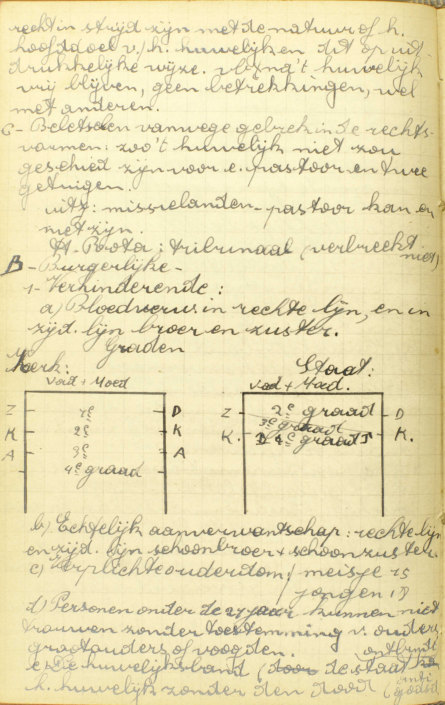 C
- Beletselen vanwege gebrek in de rechtsvormen: zo ’t
huwelijk niet zou geschied zijn voor een pastoor en twee
getuigen. Uitzondering: missielanden, pastoor kan er niet
zijn. B - Burgelijke: 1 - Verhinderende: a)
Bloedverwantschap in rechte lijn en in zijdelingse lijn
broer en zuster. b) Echtelijk aanverwantschap: rechte lijn
en zijdelingse lijn schoonbroer en schoonzuster. c)
Verplichte ouderdom: meisje 15, jongen 18. d) Personen onder
de 21 jaar kunnen niet trouwen zonder toestemming van
ouders, grootouders of voogden. e) De huwelijksband (de
staat ontbindt het huwelijk zonder de dood.
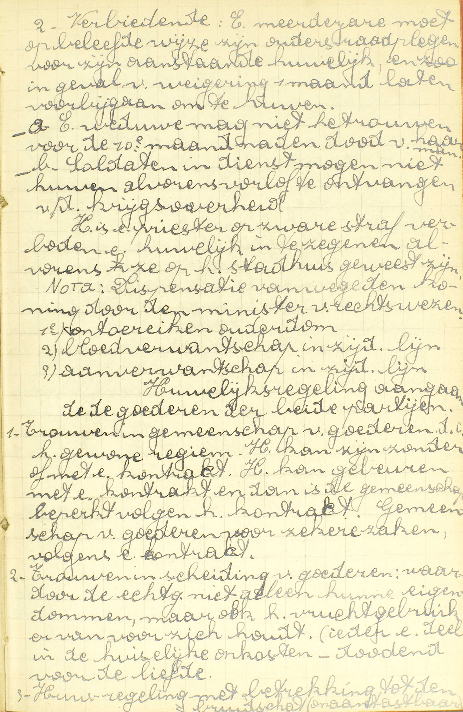 2 - Verbiedende: Een
meerderjarige moet op beleefde wijze zijn ouders raadplegen
voor zijn aanstaande huwelijk en in geval van weigering 1
maand lagen voorbijgaan om te huwen. a) Een weduwe mag niet
hertrouwen voor de 10ᵉ maand na de dood van haar man. b)
Soldaten in dienst mogen niet huwen alvorens verlof te
ontvangen van de krijgsoverheid. Het is een priester op
zware straf verboden een huwelijk in te zegenen alvorens ze
op het stadhuis geweest zijn. NOTA: dispensatie vanwege de
koning door de minister van rechtswegen. 1) ontoereikende
ouderdom, 2) bloedverwantschap in zijdelingse lijn, 3)
aanverwantschap in zijdelingse lijn.
Huwelijksregeling
aangaan voor de goederen van beide partijen. 1 - Trouwen in
gemeenschap van goederen, d.i. het gewone regime. Het kan
zijn zonder of met een contract. Het kan gebeuren met een
contract en dan is de gemeenschap beperkt volgens het
contract. Gemeenschap van goederen voor zekere zaken,
volgens een contract. 2 - Trouwen in scheiding van goederen:
waardoor de echtgenoten niet alleen hun eigendommen, maar
ook het vruchtgebruik ervan voor zich houden (ieder een deel
in de huiselijke onkosten - dodend voor de liefde). 3 -
Huisregeling met betrekking tot de bruidschat
(onaantastbaar) 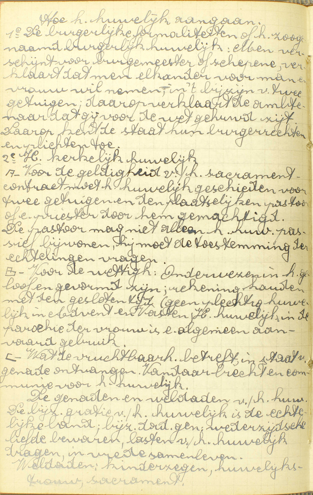
Hoe het huwelijk aangaan
1ᵉ De burgerlijke
formaliteiten of het zogenaamd burgerlijk huwelijk: men
verschijnt voor burgemeester of schepen, verklaart dat metn
elkaar voor man en vrouw wil nemen, in ’t bijzijn van twee
getuigen, daarop verklaart de ambtenaar dat gij voor de wet
gehuwd zijt. Daarop kent de staat hun burgerrechten en
-plichten toe. 2ᵉ Het kerkelijk huwelijk. A - Voor de
geldigheid van het sacrament - contract moet het huwelijk
geschieden voor twee getuigen en de plaatselijke pastoor of
een priester door hem gemachtigd. De pastoor mag niet alleen
het huwelijk passief bijwonen, hij moet de toestemming van
de echtelingen vragen. B - Voor de wettigheid - onderwezen
in het geloof en gevormd zijn; rekening houden met de
gesloten tijden (geen plechtig huwelijk in Advent en Vasten;
het huwelijk in de parochie van de vrouw is algemeen
aanvaard gebruik. C - Wat de vruchtbaarheid betreft, in
staat van genade ontvangen. Vandaar biecht en communie voor
het huwelijk.
De genaden en weldaden van het
huwelijk
De bijzondere genade van het huwelijk is
de echtelijke band; bijzondere dadelijke genade: wederzijdse
liefde bewaren, lasten van het huwelijk dragen, in vrede
samenleven. Weldaden: kinderzegen, huwelijkstrouw,
sacrament. 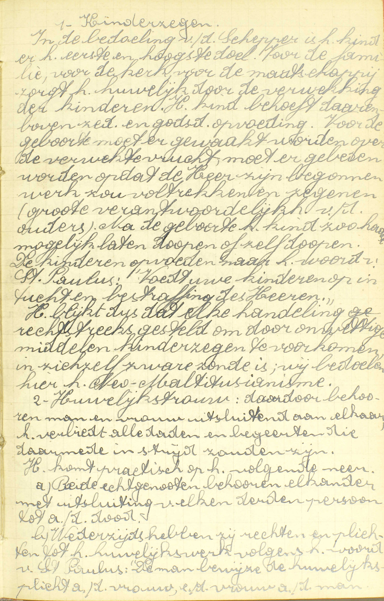
Kinderzegen
In de bedoeling van de Schepper
is het kind er het eerste en hoogste doel. Voor de familie,
voor de kerk, voor de maatschappij zorgt het huwelijk door
de verwekking van de kinderen. Het kind behoeft daarenboven
zedelijke en godsdienstige opvoeding. Voor de geboorte moet
er gewaakt worden over de verwekte vrucht, moet er gebeden
worden opdat de Heer zijn begonnen werk zou voltrekken en
zegenen (grote verantwoordelijkheid van de ouders). Na de
geboorte het kind zo haast mogelijk laten dopen of zelf
dopen. De kinderen opvoeden naar het woord van St. Paulus:
“Voed uw kinderen op in tucht en bestraffing des Heren.” Het
blijkt dus dat elke handeling rechtstreeks gesteld om door
onwettige middelen kinderzegen te voorkomen, in zichzelf
zware zonde is; wij bedoelen hier het Neo-Malthusianisme.
Huwelijkstrouw
Daardoor behoren man en
vrouw uitsluitend aan elkaar, het verbiedt alle daden en
begeerten die daarmee in strijd zouden zijn. Het komt
praktisch op het volgende neer: a) Beide echtgenoten behoren
elkaar met uitsluiting van elke derde persoon tot de dood.
b) Wederzijds hebben zij rechten en plichten tot het
huwelijkswerk volgens het woord van St. Paulus: “De man
bewijze de huwelijksplicht aan de vrouw, en de vrouw aan de
man.” 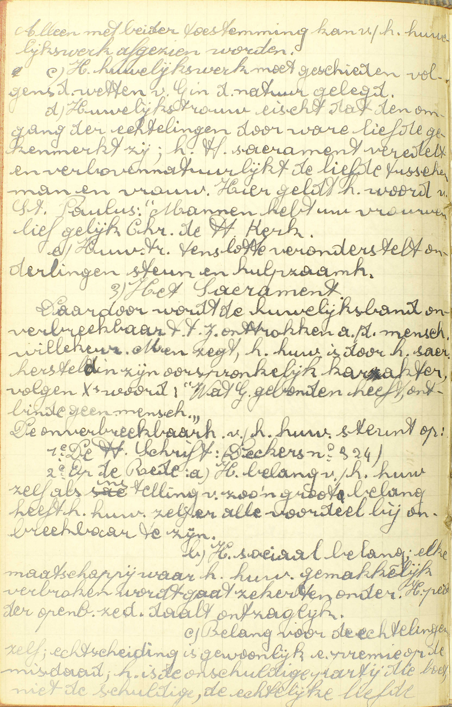 Alleen met
beider toestemming kan van het huwelijkswerk afgezien
worden. c) Het huwelijkswerk moet geschieden volgens de
wetten van God in de natuur gelegd. d) Huwelijkstrouw eist
dat de omgang van de echtelingen door ware liefde gekenmerkt
zij; het Huwelijkssacrament veredelt en verbovennatuurlijkt
de liefde tussen man en vrou. Hier geldt het woord van
St. Paulus: “Mannen hebt uw vrouen lief gelijk Christus de
Heilige Kerk.” e) Huwelijkstrouw tenslotte veronderstelt
onderlinge steun en hulpzaamheid.
2ᵉ Het
Sacrament.
Daardoor wordt de huwelijksband
onverbreekbaar, t.t.z. onttrokken aan de menselijke
willekeur. Men zegt: het huwelijk is door het sacrament
hersteld in zijn oorspronkelijke karakter, volgens Christus’
woord: “Wat God gebonden heeft, ontbinde geen mens.” De
onverbreekbaarheid van het huwelijk steunt op: 1ᵉ De Heilige
Schrift, 2ᵉ Op de Rede: a)Het belang van het huwelijk zelf
als instelling van zo’n groot belang heeft het huwelijk zelf
er alle voordeel bij onverbreekbaar te zijn. b) Het sociaal
belang: elke maatchappij waar het huwelijk gemakkelijk
verbroken wordt, gaat zeker ten onder. Het peil van de
openbare zeden daalt ontzaglijk. c) Belang voor de
echtelingen zelf: echtscheiding is gewoonlijk een premie op
de misdaad, het is de onschuldige partij die boet, niet de
schuldige. De echtelijke liefde staat hier voor een onzekere
toekomst. 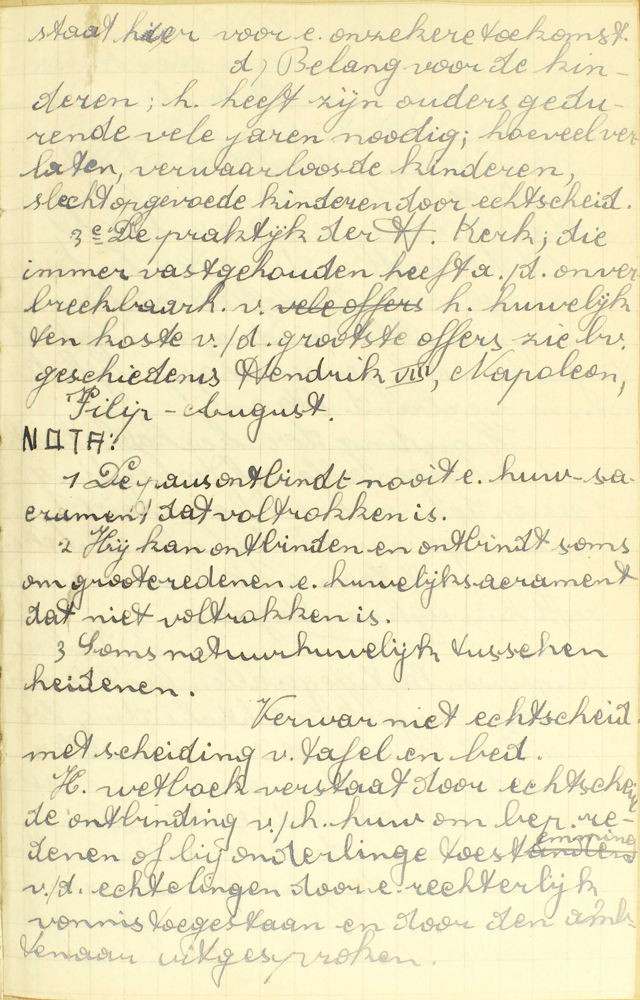 d) Belang
voor de kinderen; het heeft zijn ouders gedurende vele jaren
nodig; hoeveel verlaten, verwaarloosde kinderen, slecht
opgevoede kinderen door echtscheiding. 3ᵉ De praktijk van de
Heilige Kerk, die immer vastgehouden heeft aan de
onverbreekbaarheid van het huwelijk ten koste van de
grootste offers, zie b.v. geschiedenis Hendrik VIII,
Napoleon, Filip-August.
NOTA: 1 - De paus ontbindt nooit
een huwelijkssacrament dat voltrokken is. 2 - Hij kan
ontbinden en ontbindt soms om grote redenen een
huwelijkssacrament dat niet voltrokken is. 3 - Soms
natuurhuwelijk tussen heidenen. Verwar niet echtscheiding
met scheiding van tafel en bed. Het wetboek verstaat door
echtscheiding de ontbinding van het huwelijk om bepaalde
redenen of bij onderlinge toestemming van de echtgenoten
door een rechterlijk vonnis toegestaan en door de ambtenaar
uitgesproken. 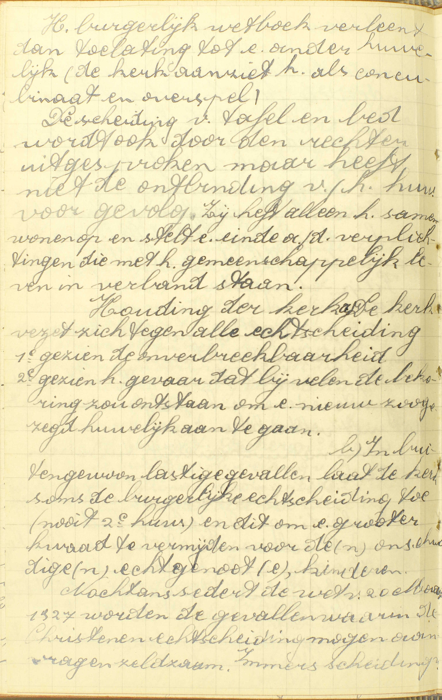 Het
burgerlijk wetboek verleent dan toelating tot een ander
huwelijk (de kerk aanziet het als concubinaat en overspel).
De scheiding van tafel en bed wordt ook door de rechter
uitgesproken, maar heeft niet de ontbinding van het huwelijk
voor gevolg. Zij heft alleen het samenwonen op en stelt een
einde aan de verplichtingen die met het gemeenschappelijk te
leven in verband staan. Houding van de kerk: a) De kerk
verzet zich tegen alle echtscheiding, 1ᵉ gezien de
onverbreekbaarheid, 2ᵉ gezien het gevaar dat bij velen de
bekoring zou ontstaan om een nieuw zogezeg huwelijk aan te
gaan. b) In buitengewoon lastige gevallen laat de kerk soms
de burgerlijke echtscheiding toe (nooit tweede huwelijk) en
dit om een groter kwaad te vermijden voor de onschuldige
echtgenoot, kinderen. Nochtans sedert de wet van 20 oktober
1927 worden de gevallen waarin de Christenen echtscheiding
mogen aanvragen zeldzaam.
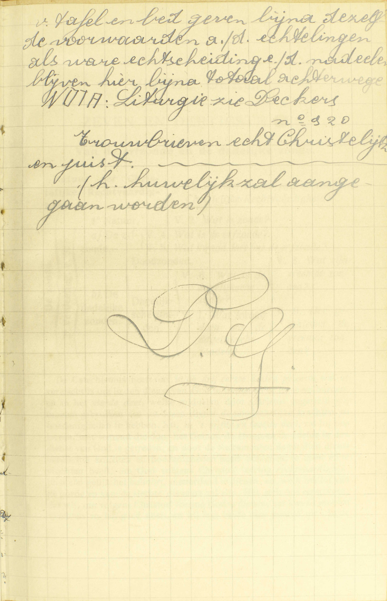 Immers scheiding van
tafel en bed geven bijna dezelfde voorwaarden aan de
echtelingen als ware echtscheiding en de nadelen blijven
hier bijna totaal achterwege. A. Het antwoord
leert wat dit Sacrament bijzonder hetekent en uitwerkt,
namelijk:
1° Dat man en vrouw: één man met één vrouw — wettelijk: in de ogen van God en van de H. Kerk — verbonden worden, en
2° Gratie ontvangen: vermeerdering van de heiligmakende en recht tot dadelijke — om kinderen op te brengen tot Gods glorie: tot ware dienaars van God en ware leden van de H. Kerk.
Alhoewel de Sacramenten slechts dienen om Gods genade mee te delen, brengt het Huwelijk, boven de genade, nog de verbintenis teweeg, omdat het niet uitsluitend een Sacrament, maar ook een contract is: Christus heeft immers, voor de gedoopten, het contract van het Huwelijk tot de waardigheid van een Sacrament verheven, i.a.w. het contract van het Huwelijk tot een uitwendig teken ingesteld, dat, voor de gedoopten, een bijzondere genade betekent, welke het hun door zichzelf geeft. Doch. men geve er wel acht op, bij de gedoopten kan het contract onmogelijk van het Sacrament gescheiden worden, daar, volgens Christus’ instelling, het contract zelf voor al de gedoopten tot de waardigheid van een Sacrament is verheven, en bijgevolg, ging een gedoopte, volstrekt weigerende het Sacrament te ontvangen, het contract van het Huwelijk aan, hij zou op gener wijze getrouwd zijn, want zijn contract zou gans en geheel ongeldig wezen.
Het uitwendig teken van het Sacrament is het contract, waardoor man en vrouw zich wettelijk verbinden; want ’t is dit contract zelf dat Christus heeft ingesteld als sacramenteel teken van de bijzondere genade van het Huwelijk; bijgevolg, wanneer dit contract door gedoopten wordt aangegaan, betekent het niet uitsluitend de natuurlijke verbintenis, maar ook de bijzondere genade door Christus er aan gehecht. Immers het contract kan, gelijk wij reeds gezien hebben. bij de gedoopten geenszins van het Sacrament gescheiden worden.
Wat is de ondertrouw, die gewoonlijk voorgaat?
Deze is een enkele belofte van elkaar te trouwen op bekwamen tijd
V. Wat is de ondertrouw die gewoonlijk, zo niet op een plechtige wijze in de tegenwoordigheid van de pastoor, dan toch in ’t bijzonder of in ’t geheim voorgaat: is ook deze een Sacrament van het Huwelijk, of wat is zij?
A. Deze ondertrouw is geen Sacrament van het Huwelijk, maar slechts een enkele wederzijdsche belofte van elkaar te trouwen — op bekwamen tijd: op de tijd die met de belofte of met de omstandigheden overeenstemt. Deze belofte brengt een ware verplichting mee en is zij ernstig gedaan en wederzijds aanvaard geweest. zelfs een verplichting op doodzonde, tenware bruidegom en bruid vrijwillig terugtraden, of één van beiden, om bijzondere redenen, recht krege om zijn belofte niet te volbrengen.
Mag het Huwelijk van iedereen ontvangen worden en met alle mensen?
Neen, want niet met degenen, die belofte van zuiverheid gedaan hebben, noch met ongelovigen, of zekere geestelijke personen, of degenen die maagschap zijn, en sommige anderen
V. Mag het Huwelijk van iedereen, wie het ook zij, ontvangen worden, en mag het door degenen die het mogen aangaan, met alle mensen aangegaan worden?
A. Neen, het mag niet van iedereen noch met alle mensen aangegaan worden: niet, zegt de Catechismus, 1° met degenen die belofte van zuiverheid gedaan hebben: met degenen die aan God beloofd hebben, voor enige tijd of voor altijd in ongehuwden staat te leven, en door die helofte nog gehouden zijn; 2° noch met ongelovigen: met al degenen die enigszins buiten de Rooms-Katholieke Kerk zijn, zoals ongedoopten, Ketters, Schismatieken; 3° of zekere geestelijke personen: dezulke die een van de grote orden ontvangen hebben; 4° of degenen die maagschap zijn: die met dewelke men binnen zekeren graad — verder aangeduid — verwant of, gelijk men zegt, familie is, hetzij door lichamelijk maagschap of bloedverwantschap; hetzij door aangetrouwd maagschap, ook aanverwantschap of zwagerschap genoemd; hetzij door geestelijk, of nog door wettelijk maagschap; en 5° sommige anderen: b.v. degenen die wettig met een anderen persoon getrouwd zijn.
Onder de hier vermelde klassen van mensen met wie het Huwelijk niet mag aangegaan worden, zijn er twee die het volstrekt niet mogen aangaan, namelijk, degenen die belofte van zuiverheid gedaan hebben, en zekere geestelijke personen.
Het bloedverwantschap bestaat tussen al degenen die door hun afkomst, hun geboorte of bloed verbonden zijn; het aangetrouwd maagschap, tussen elken echtgenoot en de bloedverwanten van zijn wederhelft. Wat het geestelijk maagschap is, wordt gezegd in v. 5. Het wettelijk maagschap ontstaat uit het aannemen van eens anders kind tot het zijne. Daardoor wordt de aannemeling belet in huwelijk te treden, 1° met de persoon die hem heeft aangenomen, 2° met dezes echtgenoot, 3° met dezes kinderen die nog onder de vaderlijke macht staan. Insgelijks wordt de persoon die aanneemt onbekwaam het huwelijk aan te gaan 1° met de echtgenoot des aannemelings, 2° met dezes kinderen die nog aan het vaderlijk gezag onderhevig zijn.
Zou het Huwelijk, met deze aangegaan, immer goed wezen?
Met sommigen zou het van gener waarde wezen, als met geestelijke personen, of met lichamelijk maagschap tot de vierden graad, of ook met geestelijk maagschap
V. Zou het Huwelijk, met de voornoemde klassen van personen aangegaan, goed wezen: geldig zijn of man en vrouw wezenlijk verbinden en genade geven?
A. Niet met al die klassen, maar alleen met sommige daarvan — zou het van gener waarde wezen: zou het ongeldig zijn en bijgevolg niets teweegbrengen, als, onder anderen, met geestelijke personen, met degenen die een grote orde ontvangen hebben, of met lichamelijk maagschap of bloedverwantschap, in rechte lijn, tot alle graden en, in de zijdelijke lijn tot de vierde graad; met wettig aanverwantschap tot de vierde en met onwettig tot de tweede graad; (de Catechismus zegt enkel tot de vierde graad, omdat hij slechts het bijzonderste wil aanduiden), — of ook met geestelijk maagschap. (v. 5.) Het Huwelijk zou ook van gener waarde wezen met personen die in een door de H. Kerk goedgekeurde orde de plechtige belofte van zuiverheid gedaan hebben, of met ongedoopten; maar met Ketters of Schismatieken zou het geldig wezen.
Hieruit volgt dat er twee soorten van huwelijksbeletselen zijn: de ene, die het Huwelijk ongeldig, de andere, die het uitsluitend ongeoorloofd maken: zo is het Huwelijk met bloedverwanten tot de vierde graad ongeldig, terwijl dat van een Katholieke met een Ketter wel ongeoorloofd maar toch geldig is.
Aldeze beletselen zijn deels door de natuurwet, deels door de H. Kerk gesteld. Deze heeft ongetwijfeld de macht van beletselen van het Huwelijk in te stellen, gelijk het Geloof het ons leert. Immers, daar het Huwelijk een contract is, mag het door wettige overheid, bij middel van beletselen geregeld worden, en, daar het een Sacrament ís. behoort het stellen van die beletselen aan de H. Kerk en aan haar alleen toe, want aan haar alleen heeft Christus het bedienen van de Sacramenten toevertrouwd.
In rechte lijn: stammen de bloedverwanten de een van de andere af, i.a.w. staan zij tot elkander in de betrekking van ouders en kinderen, grootvaders en kleinkinderen, enz., dan zijn zij bloedverwanten in de rechte lijn: komen zij uitsluitend uit één en dezelfde stam voort, dan zijn zij bloedverwanten in zijdelijke lijn.
De graad van bloedverwantschap is op de volgende wijze te rekenen: 1° voor de personen die in rechte lijn zijn: met vader en moeder is de zoon en de dochter in de eerste graad; de kleinzoon en de kleindochter, in de tweede; de kinderen van kleinzoon en kleindochter, in de derde, en de kleinkinderen van kleinzoon en kleindochter, in de vierde. 2° Wat de bloedverwanten in zijdelijke lijn betreft: broeders en zusters zijn in de eerste graad; kinderen van broeders en zusters, in de tweede; kleinkinderen van broeders en zusters, in de derde; kinderen van deze kleinkinderen in de vierde graad. De man is aangetrouwd maagschap met de familie van zijn vrouw in dezelfde lijn en in dezelfde graad als de vrouw er mee in bloedverwantschap is, en omgekeerd.
Wat is geestelijk maagschap?
Hetwelk door de stelling van de Heilige Kerk bestaat tussen de peter of de meter en dengene die gedoopt of gevormd is, en zijn ouders
A. Geestelijk maagschap is hetwelk, niet door de natuurwet, maar door de stelling van de H. Kerk: door de vrije instelling van de opperste kerkelijke overheid bestaat tussen de peter of de meter van het Doopsel of van het Vormsel, en de bedienaar dier Sacramenten van de een kant, — en dengene die gedoopt of gevormd is, en zijn ouders van de anderen kant. Dus bestaat er geen geestelijk maagschap tussen peter en meter, noch tussen deze en de bedienaar van het Doopsel of hef Vormsel; maar wel tussen hen allen enerzijds, en de doop- of vormelingen en van deze ouders anderszijds, De Catechismus spreekt hier van de bedienaar niet, omdat die van het Doopsel gewoonlijk priester, die van het Vormsel altijd ten minste priester is, en alle priester reeds door zijn wijding belet is het Huwelijk aan te gaan.
Dit beletsel is ingebracht, omdat peter, meter en bedienaar in voornoemde Sacramenten als de ouders worden van het geestelijk leven van de doop- of vormelingen; daarom ook draagt het de naam van geestelijk maagschap.
Moet het huwelijk vóór iemand geschieden?
Het moet geschieden vóór de eigen pastoor, of vóór iemand van hem daartoe gemachtigd, en twee getuigen; of anders zou het van gener waarde wezen
V. Moet het Huwelijk, om geldig te zijn, vóór iemand geschieden, ofwel mag men het in ’t geheim of zonder getuigen aangaan?
A. Het moet geschieden vóór drie personen, namelijk: vóór de eigen pastoor: vóór de wettigen pastoor van de parochie van de man of van de vrouw, of vóór iemand: voor een priester van hem: van de eigen pastoor — daartoe gemachtigd: aangesteld om hem daarbij te vervangen, en vóór twee getuigen die tot de jaren van verstand gekomen zijn en in staat zijn getuigenis te geven van het aangegaan Huwelijk; of anders: ware een van deze voorwaarden niet volbracht, zou het niet uitsluitend ongeoorloofd, maar van gener waarde of ongeldig wezen. Het Concilie van Trente heeft deze voorwaarde tot de geldigheid van het Huwelijk vereist om de geheime Huwelijken, waar zovele misbruiken uit voortsproten, te beletten. Doch het heeft tevens vastgesteld dat deze wet slechts in die parochiën zou gelden, waar zij afgekondigd zou geweest zijn. In ons land is die afkondiging gebeurd in alle parochiën.
Wat geeft het heilig Sacrament van het Huwelijk?
Ten eerste, genade om kinderen tot Gods eer te krijgen en op te voeden; ten tweede, boven de verbintenis geeft het genade om in liefde en peis te leven; ten derde, sterkte om beter de lasten van het Huwelijk te dragen
V. Zeg meer specifiek welke de uitwerksels zijn van het Huwelijk, dat, zoals de 1° vraag leert, man en vrouw wettelijk verbindt en genade geeft om kinderen tot Gods glorie op te brengen.
A. Ten eerste, genade om het hoofdeinde van het Huwelijk te bereiken, namelijk, om kinderen tot Gods eer te krijgenen op te voeden;
Ten tweede, boven de verbintenis: boven het recht en de verplichting van samen te leven, geeft het genade om in liefde en peis te leven: om elkander om God te beminnen en de vrede met elkander te bewaren;
Ten derde, sterkte om beter de lasten van het Huwelijk te dragen: genade om met verduldigheid, onderwerping, vreugde en liefde, de menigvuldige lasten te dragen die het opbrengen van de kinderen, het samenleven en de wederzijdsche gebreken veroorzaken.
Deze drie profijten zijn innig met elkander verbonden: immers, om kinderen tot Gods glorie op te brengen, moeten de getrouwden in vrede en peis leven, en, om zo te kunnen leven, verduldig de lasten van het Huwelijk dragen.
Om, boven de verbintenis, die door het Sacrament geldig ontvangen altijd teweeggebracht wordt, de hier vermelde genadegaven te verwerven, moeten de echtelingen in staat van genade zijn, daar het een Sacrament van de levenden geldt.
Kan het Huwelijk niet ontbonden worden?
Geenszins, dan door de dood, hoewel dat de gehuwden, om een grote reden, somtijds van samen te wonen wettelijk ontslagen worden
V. Kan het Huwelijk niet ontbonden worden, zoodanig dat men een nieuw Huwelijk mag aangaan?
A. Het kan op die wijze geenszins ontbonden worden dan door de dood van een van de echtgenoten, hoewel de gehuwden, in weerwil van de onontbindelijkheid van hun Huwelijk, somtijds: in enige gevallen, om een grote reden, zoals om erge mishandelingen, ketterij, enz. van de verplichting van samen te wonen, die uit het Huwelijk vloeit, wettelijk: door de geestelijke overheid, namelijk, door de bisschop en soms door de pastoor van hem daartoe gemachtigd, ontslagen worden.
Waarom laat de Heilige Kerk de Huwelijken niet toe in de Advent en de Vasten?
Omdat het tijden zijn van boetvaardigheid en godsdienstigheid, dewelke, door de blijdschap, die op de bruiloften gewoonlijk gesehiedt, belet worden
V. Waarom laat de H. Kerk de Huwelijken: de solemniteiten van de Huwelijken, en, in ons land, ten gevolge van een wet door de algemene gewoonte ingebracht, de Huwelijken zelf niet toe in de Advent: van de eersten Zondag van de Advent tot daags na Driekoningen en in de Vasten: van Aswoensdag tot daags na Beloken Pasen?
A. Zij laat ze dan niet toe, omdat het tijden zijn van boetvaardigheid en godsdienstigheid: omdat zij wil dat de gelovigen, gedurende die tijden, op een bijzondere wijze de boetvaardigheid en godsdienstigheid beoefenen, met hun zonden uit te boeten, hun consciëntie te zuiveren en hun hart met deugden te versieren, dewelke noodzakelijk belet worden door de blijdschap die op de bruiloften gewoonlijk geschiedt: door de feesten en vermaken die op de huwelijksdagen gewoonlijk plaats grijpen.
Aanmerking
De 36ᵉ les is heel en gans hierop gegrond, dat Christus het huwelijkscontract, door hem onontbindelijk verklaard, tot de waardigheid van Sacrament verheven heeft met het aan te nemen ter betekenis van een bijzondere genade, de genade om kinderen tot Gods glorie op te brengen — die het door zichzelf zou geven; hieruit itmnmers volgt 1° dat, voor de gedoopten, het Sacrament niet kan gescheiden worden van het contract; 2° dat de wettige overheid, omdat het een contract geldt, aan het Huwelijk beletselen kan stellen die het ongeoorloofd en zelfs ongeldig maken, en dat dit stellen van beletselen niet strijdig is met de volkomen afhankelijkheid van de Sacramenten van Christus’ instelling en met hun daaruit vloeiende onveranderlijkheid, vermits Christus, om de orde niet te storen, dát Huwelijk tot de waardigheid van Sacrament heeft verheven, dat wettig aangegaan wordt; — 3° dat de macht van zulke beletselen in te brengen alleen aan de H. Kerk toekomt, daar het Huwelijk een Sacrament is, en de H. Kerk alleen macht over de Sacramenten heeft; — 4° dat het Huwelijk van de gedoopten slechts door de dood kan ontbonden worden, alhoewel de gehuwden soms van de plicht van samen te wonen kuanen ontslagen worden.
VRAGEN
Waarvan handelt deze les? — Hoe wordt zij verdeeld? — Wat bevat ieder deel?
Onder welk opzicht doet de Catechismus, in zijn beschrijving van het Huwelijk, ons dit Sacrament kennen? — Zeg met de Catechismus, hoeveel en welke dingen het Huwelijk bijzonder uitwerkt. — Leg deze uit. — Hoe geeft dit Sacrament, boven de genade, nog de verbintenis tussen man en vrouw? — Kan het contract van het Huwelijk van het Sacrament gescheiden worden? — Geef er de reden van. — Welk ís het uitwendig teken van dit Sacrament, en waarom?
Geef de zin van de vraag: Wat is de ondertrouw die gewoonlijk voorgaat? — Is zij een Sacrament? — Zeg, met de Catechismus, wat zij is. — Leg de woorden van de Catechismus uit. — Welke verplichting brengt de ondertrouw mede?
Leg deze vraag uit: Mag het Huwelijk van eendegelijk ontvangen worden en met alle mensen? — Mag het, ja of neen, van iedereen en met alle mensen aangegaan worden? — Welke personen, met wie het niet mag aangegaan worden, noemt de Catechismus? — Verklaar de woorden van de Catechismus. — Welke van deze personen mogen het Huwelijk volstrekt niet aangaan?
Welk is de zin van de vraag: Zou het Huwelijk met deze aangegaan immers goed wezen? — Zoude het met hen allen goed wezen? — Welke klassen noemt de Catechismus met dewelke het niet goed zou wezen? — Verklaar de woorden van de Catechismus. — Noem nog enige klassen, met dewelke het Huwelijk ongeldig zou zijn. — Hoe is de graad van bloedverwantschap op te tellen? — Hoe rekent men het aanverwantschap? — Hoeveel en welke soorten van huwelijksbeletselen zijn er? — Van waar komen al de beletselen hier genoemd? — Bewijs dat de H. Kerk, en zij alleen, de macht heeft om huwelijksbeletselen in te stellen.
Zeg, met de Catechismus, van waar het geestelijk maagschap voortkomt, en tussen wie het bestaat. — Leg de woorden van de Catechismus uit. — Bestaat dit maagschap tussen peter en meter? — Tussen wie bestaat het dus? — Waarom spreekt de Catechismus niet van de bedienaar? — Waarom is dit beletsel ingesteld? — Waarom noemt men het geestelijk maagschap?
Wat betekent de vraag: Moet het Huwelijk voor iemand geschieden? — Vóór hoeveel personen moet het geschieden? — Noem ze met de woorden van de Catechismus. — Leg die woorden uit. — Zeg, met de Catechismus, hoe nodig die tegenwoordigheid is, en verklaar het antwoord. — Van waar komt dit vereiste voort? — Om welke reden is het ingebracht? — Is deze voorwaarde geheel de H. Kerk door vereist?
Verklaar de vraag: Wat geeft het H. Sacrament van het Huwelijk? — Hoeveel en welke bepaalde profijten geeft het? — Noem ze met de Catechismus. — Leg ze uit. — Toon hoe zij alle innig verbonden zijn. — Wat is vereist om al deze profijten te bekomen?
Geef de zin van de vraag: Kan het Huwelijk niet ontbonden worden? — Zeg, met de Catechismus, welke de enige manier is, waarop het ontbonden wordt. — Leg deze uit. — Blijven dus de getrouwden altijd verplicht samen te wonen? — Zeg, met de Catechismus, om welke redenen, en hoe zij van die plicht kunnen ontslagen worden. — Leg die woorden uit.
In welke tijd van het jaar is het Huwelijk niet toegelaten? — Leg de woorden uit. — Wat is er dan eigenlijk verboden? — Zeg, met de Catechismus, waarom dit verbod is gegeven geweest. — Leg die woorden uit.